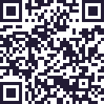

The kettle learns my name each morning.
It calls twice, and I come home.…
It calls twice, and I come home.…
Kettle
Anonymous, 2026
Poem

One per medium. Front: medium, the work, title, artist, materials. Back: description, how it was made, the meet-up.
Excerpt plus a QR for the full text.
Front
Anonymous, 2026
Poem
Back
Description
A short poem about living alone and the small sounds that keep me company.
Process

Hye-Young's monotype print.
Front
Hye-Young Jo, 2026
Monotype, oil-based ink on paper

Back
Description
An abstract take on a sea filled with plastic.
Process
QR plays the clip on a tablet.
Front
Sam Rivera, 2026
Video

Back
Description
A short scene of a city tram, built from my grandfather's photos of the line he rode to work.
Process
Waveform on the front; QR plays it with headphones.
Front
Anonymous, 2026
Audio

Back
Description
A short piano nocturne for late, rainy evenings.
Process